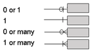

| Artifact: Physical Database Design
(ART 0520)
|
|
 |
| This artifact describes the physical structure of persistent data managed by the system as well as supporting physical constructs as required by the environment. |
Domains: Data
Work Product Kinds: Specification |
|
Purpose
Its purpose is to show how each data element will be codified and stored in a specific database management product.
It ensures that every database transaction meets or exceeds its performance requirements while implementing the
idealized design of the database. The physical design reflects the trade-offs between the canonical schema
reflected in the logical design and the need to meet specific performance objectives within a potentially constrained
environment.
|
Relationships
| Parent Deliverables |
|
| Fulfilled Slots |
|
| Roles | Responsible:
| Modified By:
|
| Tasks | Input To:
| Output From:
|
Description
| Main Description | This artifact describes the implementation of data in a physical database. It specifies implementation details such as
referential integrity, indexes, constraints, views, and physical storage constructs. |
| Brief Outline |
This artifact typically contains:
-
Physical data model
-
Data dictionary entries documenting elements of the data model
-
Data definition language (DDL) that implements the database
-
Any environmental definitions that may be required, such as configuration files or access method definitions
|
| Notation |
There are three commonly used notations for physical data modeling. While they all reflect common data modeling
concepts, each has its own graphical syntax briefly described below. For a more detailed description of these
notations, see the references.
Information Engineering
-
Tables are represented by a box with the table name inside. Compartments are added for primary keys and attributes.
-
Relationships between tables are described by a line. Solid lines indicate an identifying relationship, while
dashed lines indicate a non-identifying relationship. Terminating symbols on each end describe optionality and
cardinality rules.
|

|

|
Integration Definition for Information Modeling (IDEF1X)
-
Entities are represented with square or round-cornered boxes. Rounded corners indicate dependencies for
identification on another entity. Each entity is assigned a label which is placed above the box.
-
Attributes are represented in compartments inside the box. Key attributes are located in the first compartment.
-
Relationships between entities (connection relationships) are described with lines and terminating symbols. A solid
line indicates an identifying foreign key. Dashed lines indicate that it is non-identifying. There are a number of
terminating symbols that are combined to describe optionality and cardinality. These symbols cannot be interpreted
independently of each other. It is the combination that describes the rules.
The Unified Modeling Language (UML)
-
Tables are represented as stereotyped classes. The top compartment of the class box contains the name of the class
(table), and the next compartment contains its attributes (columns). Key columns are tagged with either a Primary
Key (<<PK>>) or Foreign Key (<<FK>>) stereotype. In case a foreign key is used as a primary
key, the combined key is marked with the (<<PFK>>) stereotype.
-
Relationships between tables are described with UML associations.
|
| Selected Representation |
Rational Data Architect is used for developing the physical data model. Information Engineering (IE) and the
Unified Modeling Language (UML) are its supported notations.
|
Illustrations
Tailoring
| Impact of not having | Without this artifact, the data definition language is produced directly from the idealized design of the database, which
could result in a database that does not meet its performance requirements. |
| Reasons for not needing |
Some reasons for not needing this artifact:
-
The solution does not require a database.
-
The system stores small amounts of data with low access volumes
-
The system uses an object-oriented database manager (ODBMS) which stores the object model directly, without changes
to the schema. However, a database tuning activity could still be appropriate.
|
| Representation Options |
Informal data models can be created using whiteboards or drawing tools. However, if the model needs to be maintained, a
data modeling tool is advised.
When selecting which data modeling notation should be used, consider the following pros and cons:
-
Information Engineering (IE) notation is a widely accepted standard for data models. Simple and concise, it is very
readable even by non-technical stakeholders
-
Integrated Definition for Information Modeling (IDEF1X) is a federal standard notation originally developed for
physical data modeling. It is very complex and can result in models that are difficult to review with stakeholders.
-
The Unified Modeling Language (UML) does not have explicit data modeling constructs as part of its notation, but
IBM Rational has developed a UML profile for this purpose.
|
More Information
| Checklists |
|
| Guidelines |
|
| Supporting Materials |
|
| Estimation Considerations |
|
© Copyright IBM Corp. 1987, 2012 All Rights Reserved
Property of IBM
These materials are intended only for use as part of an IBM engagement |
|